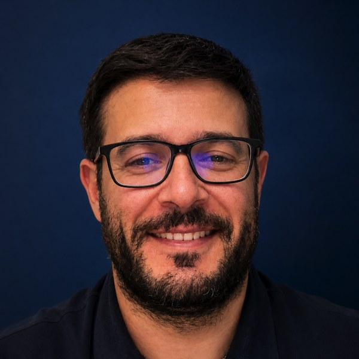

Andrea Angioi, MD, FASN
Nephrologist · ARNAS G. Brotzu, Cagliari, Italy · Complement-mediated & glomerular kidney disease · AI in nephrology
About
I am a nephrologist at ARNAS G. Brotzu in Cagliari, Sardinia, in the Nephrology, Dialysis and Transplantation unit. My clinical and research work is glomerular and complement-mediated kidney disease: C3 glomerulopathy, IgA nephropathy, membranous nephropathy, atypical HUS and thrombotic microangiopathies, ANCA-associated vasculitis, and monoclonal gammopathy of renal significance (MGRS/PGNMID), including induction and maintenance therapy. I perform ultrasound-guided native and transplant kidney biopsies, pediatric cases included, with clinical-pathological interpretation, and I run a dedicated clinic for autosomal dominant polycystic kidney disease (ADPKD).
I trained in medicine at the University of Cagliari and in nephrology at the University of Sassari, and between 2015 and 2021 I held three consecutive research appointments at Mayo Clinic, Rochester, under Prof. Fernando C. Fervenza. I am a Fellow of the American Society of Nephrology (FASN) since 2016 and a member of the Renal Pathology Society since 2013.
Roles
- Senior Associate Editor, Renal Failure (Taylor & Francis), since 2025
- Associate Editor, Frontiers in Nephrology, since 2025
- Regional Representative for Sardinia and member of the National Working Group on Artificial Intelligence in Nephrology, Italian Society of Nephrology (SIN)
- Investigator in VALIGA (European validation of the Oxford classification of IgA nephropathy) and in the RI-CYCLO trial; member of the International Kidney and Myeloma Research Group (IKMG)
Selected publications
- A multi-center cohort study evaluated hemoglobinuria as a marker of inflammation in IgA nephropathy. Kidney International, 2026. doi:10.1016/j.kint.2026.07.021
- Diagnosis of complement alternative pathway disorders. Kidney International, 2016. doi:10.1016/j.kint.2015.12.003
- Clinicopathologic predictors of renal outcomes in light chain cast nephropathy: a multicenter retrospective study. Blood, 2020. doi:10.1182/blood.2019003807
- The importance of identifying new and putative target antigens associated with membranous nephropathy: evidence from a Sardinian cohort. Clinical Kidney Journal, 2025. doi:10.1093/ckj/sfaf115
- Management of immune-mediated glomerular diseases in the elderly. Renal Failure, 2024. doi:10.1080/0886022X.2024.2411848
- Ultrasound-guided kidney biopsy: a ten-year retrospective single-center experience and the promising role of clinical hypnosis. International Urology and Nephrology, 2025. doi:10.1007/s11255-024-04196-1
- Hypertension resistant to RAAS inhibitors as a prognostic indicator for rapid progression to ESRD in ADPKD: a ten-year follow-up. Diagnostics, 2025. doi:10.3390/diagnostics15202583
Full list: ORCID · Google Scholar
In italiano. Sono nefrologo presso la Struttura Complessa di Nefrologia, Dialisi e Trapianto dell'ARNAS G. Brotzu di Cagliari. Il mio lavoro clinico e di ricerca è dedicato alle glomerulopatie e alle malattie renali mediate dal complemento: C3 glomerulopathy, IgA nephropathy, membranous nephropathy, atypical HUS e thrombotic microangiopathy, ANCA-associated vasculitis, MGRS e PGNMID, dalla terapia di induzione a quella di mantenimento. Eseguo personalmente biopsie renali ecoguidate, su rene nativo e trapiantato e anche in età pediatrica, integrando il reperto istologico con il quadro clinico. Seguo inoltre un ambulatorio dedicato alla autosomal dominant polycystic kidney disease (ADPKD).
Mi sono laureato in Medicina e Chirurgia all'Università di Cagliari e specializzato in Nefrologia all'Università di Sassari. Tra il 2015 e il 2021 ho svolto tre incarichi di ricerca consecutivi alla Mayo Clinic di Rochester, con il Prof. Fernando C. Fervenza. Sono Fellow dell'American Society of Nephrology (FASN) dal 2016, Senior Associate Editor di Renal Failure e Associate Editor di Frontiers in Nephrology. Nella Società Italiana di Nefrologia sono rappresentante regionale per la Sardegna e faccio parte del Gruppo di lavoro nazionale sull'intelligenza artificiale in nefrologia.
Contact
Institutional e-mail: andrea.angioi@aob.it